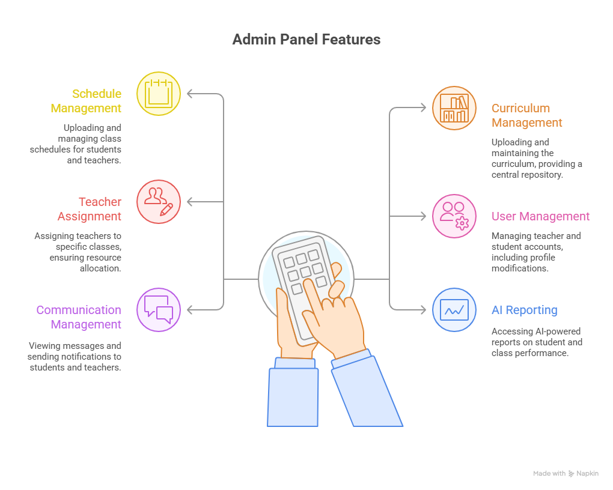
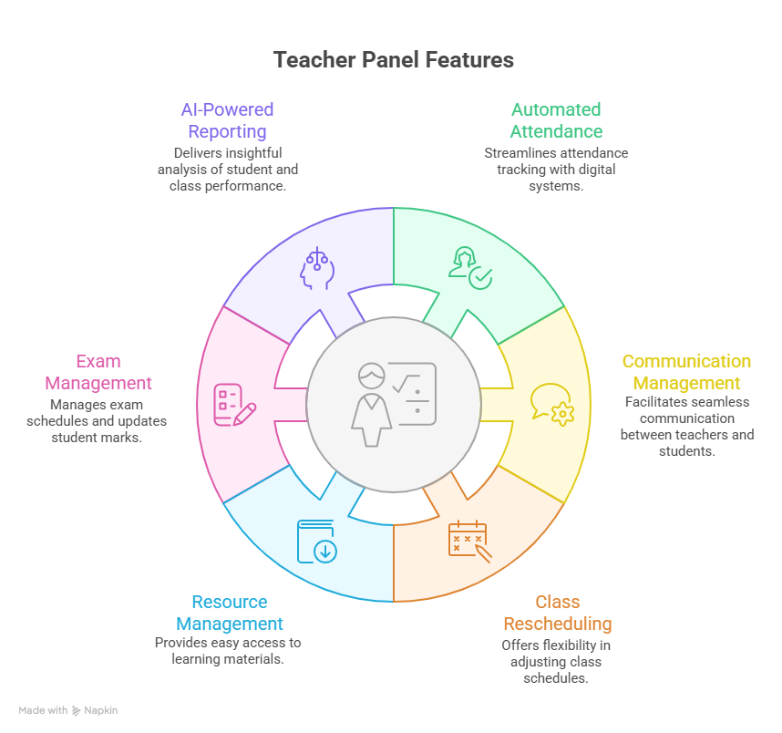
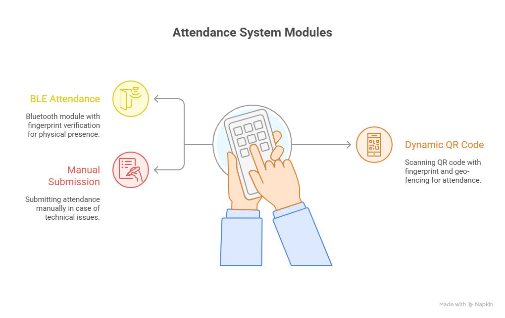
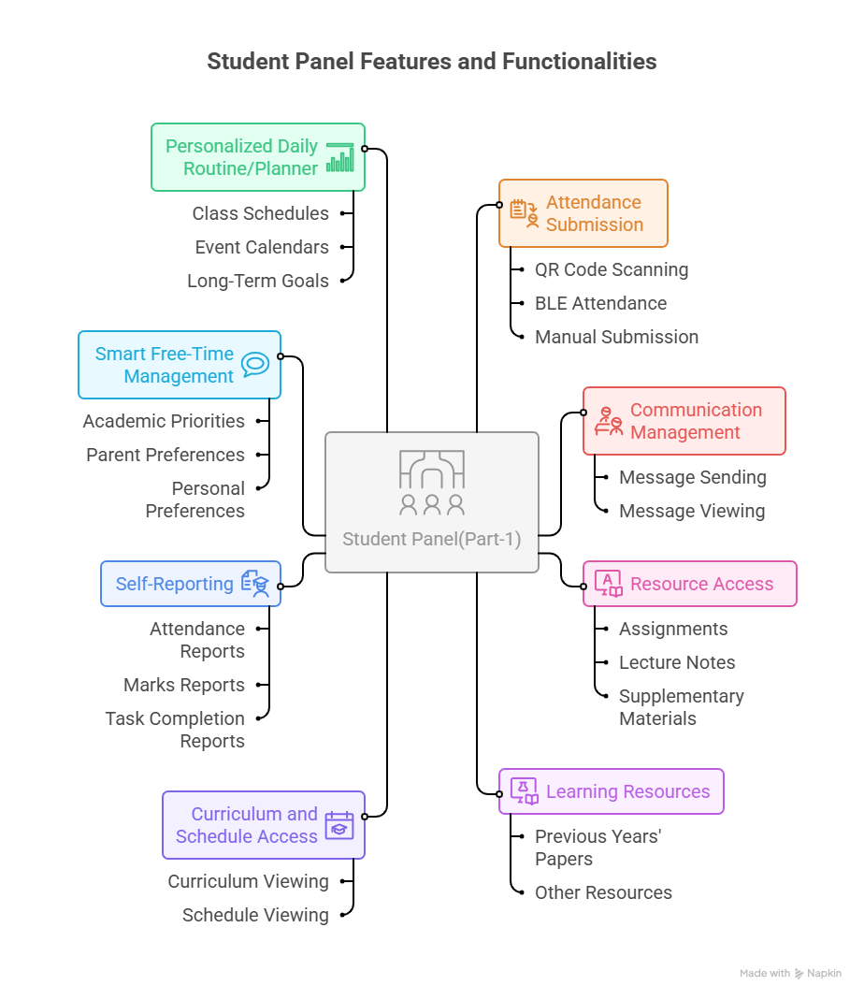
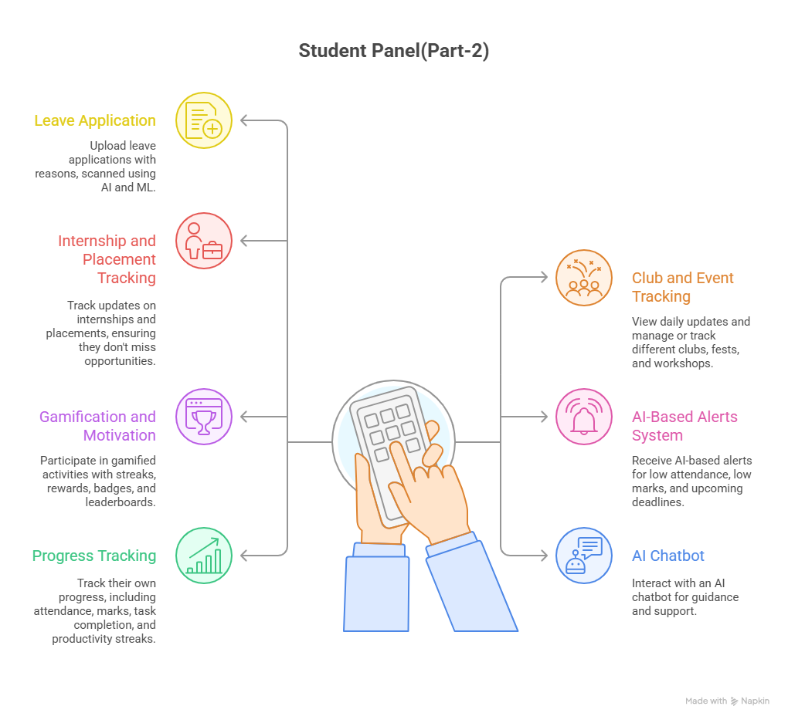
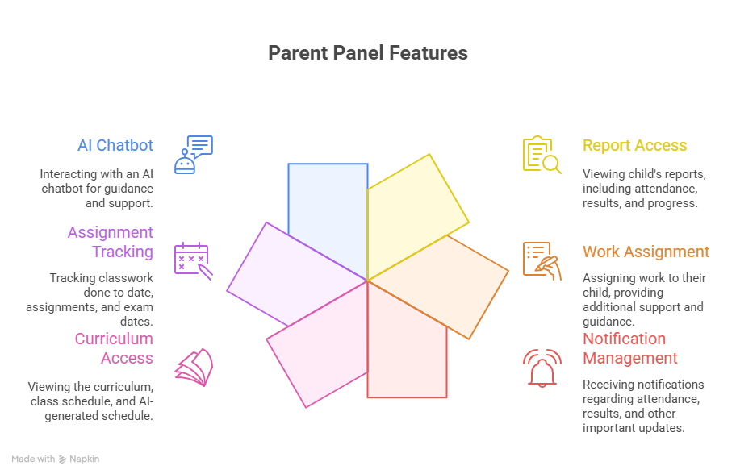

Roadmap & Methodology — Proposed Solution (SIH)
Mind-map Images












Define requirements across Admin/Authorities, Teachers, Students, and Parents. Capture workflows for schedules, curriculum, notifications and AI-reporting needs.
Design dynamic QR flows per-class, BLE attendance & fingerprint verification, and geo-fencing to prevent proxy attendance.
Teacher dashboards: dynamic QR generation, rescheduling, assignments/resources, exam scheduling, and report updates. Admin: class scheduling, teacher management and system notifications.
Personalized daily planner, Smart Free-Time management, event/activity calendar per-student, and integration with ERP/Google Calendar for automatic syncing.
Attendance/performance alerts, low-marks reminders, exam due-date prompts, streaks, badges and leaderboards to boost engagement.
Parent access to child reports, assign tasks, receive notifications about attendance/results, and engage via an AI chatbot for guidance.
Pilot BLE/fingerprint modules, QR reliability, offline fallback (SMS/WhatsApp), and scale to production with monitoring.
Collect usage feedback, refine AI models for reports and recommendations, and iterate on UX for all panels.
Expand features: placements/internships tracker, API integrations with college ERP, and multi-institution rollout.